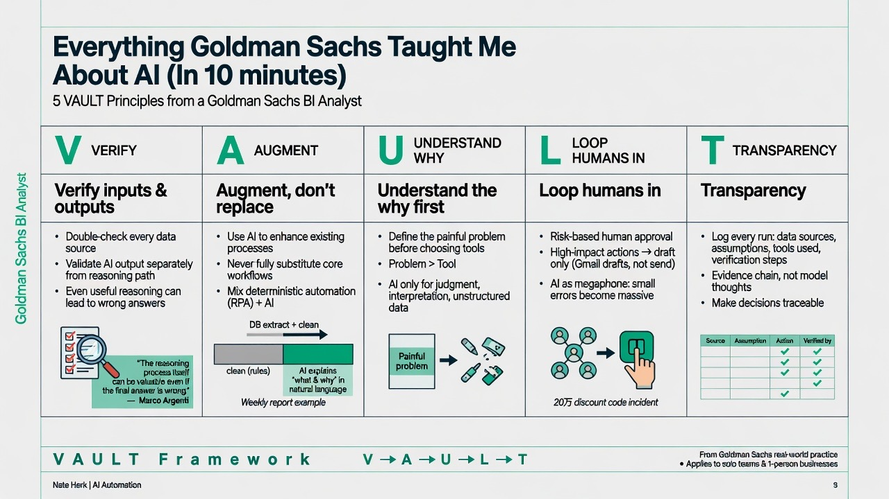

Nate Herk | AI AutomationMORNING DIGEST · 2026-08-25 · Nate Herk | AI Automation🎬 영상
Everything Goldman Sachs Taught Me About AI (In 10 minutes)
Nate Herk가 골드만삭스(Goldman Sachs) 비즈니스 인텔리전스 애널리스트로 근무하며 배운 5가지 AI 원칙을 "VAULT" 프레임워크로 정리해 소개하는 영상이다. 대형 금융사가 실무에서 AI를 도입할 때 지키는 원칙을 개인·소규모 팀 단위 AI 활용에도 그대로 적용할 수 있다고 주장한다.

01핵심 개요
항목
내용
채널
Nate Herk \
AI Automation
제목
Everything Goldman Sachs Taught Me About AI (In 10 minutes)
Understand the why(목적 이해): 도구보다 문제 정의가 먼저다 (약 05:20).
Loop humans in(인간 개입 유지): 자동화된 AI 에이전트의 파급력을 인간이 통제한다 (약 06:47).
Transparency(투명성): AI가 어떻게 결론에 도달했는지 추적 가능해야 한다 (약 08:51).
03기술적 맥락
"추론 과정 vs 최종 출력"의 구분: 골드만삭스 CIO 마르코 아르젠티(Marco Argenti)는 AI 모델이 문제를 분해·분석하는 "추론(reasoning)" 과정 자체는 최종 답이 틀렸더라도 유용할 수 있다고 강조한다. 즉 추론 경로에서 힌트를 얻되, 결과값은 별도로 검증해야 한다는 것이다.
결정론적 자동화(deterministic automation) vs AI 판단: 규칙이 명확하고 정답이 이미 정해진 작업은 일반 자동화(RPA·스크립트 등)로 처리하는 것이 AI보다 저렴·빠르고 감사(audit)하기 쉽다. AI는 판단·해석·유연성·비정형 정보 처리가 필요한 경우에만 투입해야 한다는 기술적 구분을 제시한다.
혼합 아키텍처 예시: 주간 비즈니스 리포트를 예로 들어, 결정론적 자동화가 DB에서 숫자를 추출·정제·검증하고, 그 검증된 숫자를 AI가 자연어로 "무엇이 왜 바뀌었는지" 설명하는 역할 분담 구조를 제안한다.
인간 개입 수준의 위험 기반 조정: 개인 메모 정리처럼 파급력이 작은 작업은 완전 자동 실행을, 고객 대응·금전 처리·대량 커뮤니케이션처럼 파급력이 큰 작업은 "승인 단계(approval step)"를 강제한다. 실무적으로는 이메일을 바로 발송하지 않고 Gmail 임시보관함(draft)에 저장하도록 자동화를 설계하는 방식을 권한다.
로깅·문서화 인프라: AI 실행마다 데이터 출처, 가정, 사용 도구, 검증 절차, 주요 의사결정을 로그로 남기도록 요구한다. 이는 모델의 "숨겨진 내부 사고 과정"을 요구하는 것이 아니라, 검증 가능한 출처·입력·행동·가정의 증거(evidence)를 남기라는 의미로 구분된다.
04전략적 의미
대형 금융기관은 "한 번의 잘못된 데이터 입력이나 환각(hallucination)이 수백만 달러 손실이나 평판 손상으로 이어질 수 있는" 환경이므로, 이들이 실제로 따르는 원칙은 검증된 실전 방법론이라는 것이 화자의 핵심 논지다.
"AI로 무엇이든 해결하자"는 하이프(hype)에 대한 반론으로, "AI를 쓰지 않는 것이 오히려 더 싸고 빠르고 낫다"는 판단 자체가 가치 있는 관점이라고 강조한다. 이는 AI 에이전트 만능주의에 대한 실무적 균형추 역할을 한다.
실제 사례로, 자율 AI 에이전트가 작업 목록에서 항목 하나를 스스로 잘못 해석해 약 20만 명에게 할인 코드를 발송한 사고를 소개하며, AI를 "메가폰(megaphone)"에 비유한다. 작은 지시 오류도 자동화된 워크플로우에 연결되면 파급력이 증폭된다는 것이다.
커뮤니티 사례 비교: 기술(도구)에서 출발해 다양한 워크플로우를 만들었지만 고객 확보에 실패한 사람들과, 하나의 고통스러운(painful) 문제에 집중해 하나의 유용한 시스템을 만들어 몇 달 안에 본업 소득을 대체한 사람들의 차이를 "선택한 문제"의 차이로 설명한다.
05핵심 워크플로우·방법론 (VAULT 프레임워크 상세)
V — Verify the output (출력을 검증하라)
데이터 검증은 AI가 답을 생성하기 "전"부터 시작된다. 화자는 골드만삭스에서 모든 비즈니스 인텔리전스 애널리스트가 거쳐야 했던 "데이터 스쿨(data school)"을 언급하며, 데이터가 어떻게 수집·정제·업데이트되는지 이해하는 것이 모든 리포트·대시보드·자동화·AI 시스템 품질의 전제조건이라고 설명한다 (00:01:34).
프롬프트 실무 팁: "최종 답을 주기 전에 모든 숫자와 사실 주장을 재확인하고, 각각의 출처를 인용하며, 100% 확신하지 못하는 부분은 표시해줘"라는 지시를 시스템에 내장한다 (00:02:07).
모든 단어를 일일이 검증할 필요는 없고, 의사결정을 좌우하는 핵심 수치 2~3개만 골라 스팟체크(spot check)하면 된다.
고위험 프로젝트는 별도의 "AI 리뷰어" 또는 AI 에이전트 팀을 구성해 1차 출력을 검토·반복(iterate)시키는 이중 점검 구조를 추가로 둘 수 있다. 단, 중요한 주장은 원본 출처, 결정론적 테스트, 사람의 검토가 여전히 필요하다.
A — Augment, don't replace (대체 말고 보완하라)
판단 기준: "작업이 명확한 규칙을 따른다면 AI 에이전트가 필요 없을 가능성이 높다." 규칙 기반·정답이 정해진 작업은 일반 자동화로, 판단·해석·유연성이 필요한 작업만 AI로 처리한다 (00:04:17).
최선의 시스템은 두 방식을 결합한다: 결정론적 자동화가 사실(facts)을 처리하고, AI가 그 위에서 스토리(설명)를 만든다.
U — Understand the why (목적을 이해하라)
골드만삭스의 엔지니어링 원칙 "build with purpose"를 인용하며, 마르코 아르젠티가 "엔지니어는 how가 아니라 why에 집중해야 한다"고 말한 점을 근거로 든다 (00:05:20).
실무 체크: AI 도구를 열기 전에 "내가 풀려는 문제는 ___이고, 좋은 결과는 ___처럼 보인다"라는 한 문장을 먼저 써볼 것을 권한다. 이 문장을 못 쓴다면 아직 프롬프트를 시작할 준비가 안 된 것이다.
L — Loop humans in (인간을 루프 안에 유지하라)
AI를 "메가폰"에 비유: 작은 지시 오류가 챗 안에서는 사소한 오답에 그치지만, 자율 에이전트에 연결되면 잘못된 이메일 발송, 잘못된 레코드 수정, 공개 게시, 대량 메시지 발송 등으로 증폭될 수 있다 (00:06:47).
실제 사고 사례: 자율 AI 에이전트가 작업 목록을 스스로 해석해 약 20만 명에게 할인 코드를 발송.
감독 수준은 행동의 파급력(consequence)에 비례해야 한다: 개인 메모 정리 같은 저위험 작업은 자동 실행 허용, 고객 대응·데이터 변경·비용 지출·대량 커뮤니케이션 같은 고위험 작업은 승인 단계 필수.
실무 팁: 자동화를 "전송(send)"이 아니라 "초안(draft)"으로 설정 — 이메일은 Gmail 임시보관함에, 답장은 문서에 초안으로 남기고, 중요 파일 변경·배포 전에는 계획을 먼저 보여주게 한다 (00:08:12).
팀 내 가이드 원칙: "에이전트가 어떤 행동을 할 수 있다면, 결국 하게 될 것이라고 가정하라" — 999번은 의도대로 작동해도 1번은 사고로 이어질 수 있다.
T — Transparency (투명성을 확보하라)
중요 데이터·리포트·리스크에 관련된 시스템을 만든다면, 정보의 출처·처리 과정·최종 결과 도출 방식을 설명할 수 있어야 한다. 규제기관, 고객, 매니저, 타 팀이 그 의사결정을 검토할 수 있어야 하기 때문이다 (00:08:51).
모든 실행은 데이터 출처, 가정, 사용 도구, 검증 절차, 주요 의사결정을 로그로 남겨야 하며, 리포트는 각 결론을 뒷받침하는 출처를 명시하고, 자동화는 트리거·각 단계·승인이 필요한 지점을 설명하게 한다.
투명성은 모델의 "숨겨진 내부 사고"를 억지로 드러내는 것이 아니라, 검증 가능한 증거(출처·입력·행동·가정·점검 내역)를 남기는 것을 의미한다.
06활용 시나리오
주간 비즈니스 리포트 자동화: 결정론적 자동화가 DB에서 숫자를 추출·정제·검증하고, AI가 변화의 맥락을 자연어로 설명 — Augment 원칙의 실제 적용 사례.
이메일/고객 커뮤니케이션 자동화: 자동 발송 대신 Gmail 임시보관함에 초안만 생성하도록 설정해 대량 오발송 사고(20만 명 할인코드 오발송 사례 참고)를 예방 — Loop humans in 원칙.
리포트/대시보드 신뢰성 확보: AI에게 "최종 답 전에 모든 수치·주장을 재검증하고 출처를 인용하라"는 지시를 프롬프트에 내장하고, 핵심 수치 2~3개만 사람이 스팟체크 — Verify 원칙.
1인 AI 에이전시/컨설팅 사업화: AI 도구부터 배우는 대신 "내가 풀려는 문제는 무엇이고, 좋은 결과는 무엇인가"를 먼저 정의한 뒤 도구를 선택 — Understand the why 원칙, 화자의 커뮤니티 내 성공 사례와 연결.
07현황 및 전망
골드만삭스는 이미 수십 년간 자동화된 데이터·리스크 시스템을 구축해온 조직이며, 현재의 AI 에이전트 물결 이전부터 이 문제들을 다뤄왔다는 점을 화자는 강조한다. 즉 AI는 새로운 문제가 아니라 기존 자동화·데이터 거버넌스 원칙의 연장선에 있다는 시각이다.
화자는 "모든 것을 AI 에이전트로 만들 필요는 없다"는 결론을 명시적으로 제시하며, 문제 이해·데이터 보호·가장 단순한 시스템 사용·중요 행동에 대한 통제 유지가 신뢰할 수 있는 AI 시스템의 핵심이라고 정리한다.
화자는 자신의 무료 커뮤니티(약 50만 명 규모로 언급)에서 VAULT 프레임워크 전체 리소스 가이드, 7일 AI 포트폴리오 구축 코스, 1인 AI 에이전시 로드맵을 제공한다고 안내하며 마무리한다.